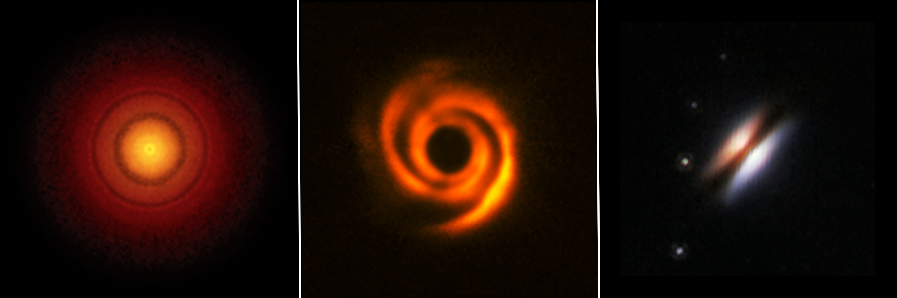

PhD Student in Astrophysics – MSSL / UCL
Hello! I'm Camila, a PhD student at the Mullard Space Science Laboratory (UCL) in Dorking, Surrey. I’m highly interested in how planets are born and the physical processes that govern their formation. Currently, I’m working on circumbinary disks to understand how planet formation occurs in these extreme environments. I completed my Master’s degree at Universidad de Chile, where I studied the dust properties of disks through a multi-wavelength analysis of the AGE-PRO sources using ALMA data.
